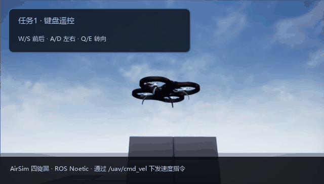
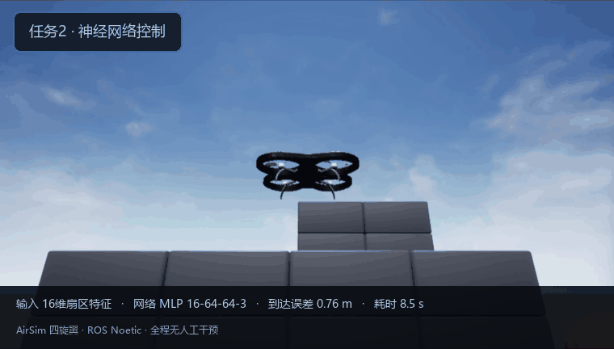
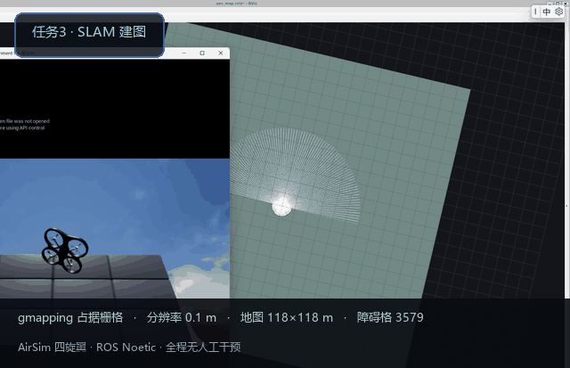
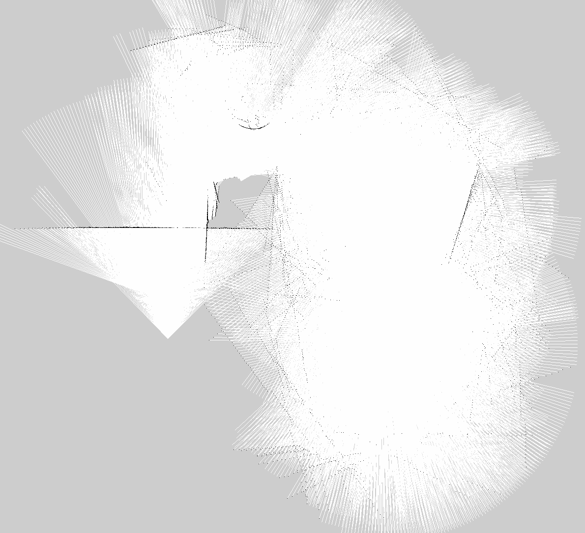
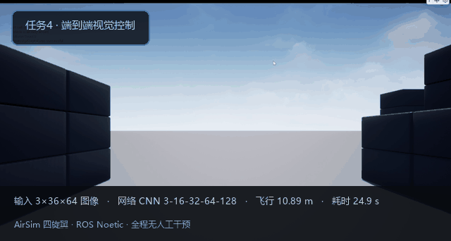

基于神经网络的无人机感知、导航与端到端控制
本文实现了一个运行在 AirSim + ROS Noetic 上的无人机系统，覆盖四项任务：
- 键盘遥控：通过速度指令控制无人机六个自由度
- 传感器感知与运动控制：激光雷达点云经神经网络输出速度指令
- 建图与导航同步：gmapping 边飞边建图，神经网络同时导航
- 端到端视觉控制：摄像头图像直接进卷积网络，输出控制指令
四项功能共用同一套 AirSim 桥接节点，模块名 uav_nn_perception_navigation。

1. 系统架构
1.1 数据流
┌──────────────────────────────┐
│ AirSim 1.8.1 (Blocks 场景) │
│ Windows 主机 172.25.176.1 │
└──────────────┬───────────────┘
│ msgpack-rpc :41451
┌──────────────┴───────────────┐
│ airsim_bridge.py │
│ 订阅 /uav/cmd_vel │
│ 发布 /uav/odom、/tf │
└──────────────┬───────────────┘
│ ROS 话题
┌──────────────────────────┼──────────────────────────┐
│ │ │
lidar_perception trajectory_control camera_perception
（16 维特征） （MLP 策略） （图像话题）
│ │ │
└──────────► /uav/cmd_vel ◄┘ │
│ │
end2end_node ◄───────────────────┘
（CNN 策略）
1.2 节点与话题
| 节点 | 订阅 | 发布 | 对应任务 |
|---|---|---|---|
airsim_bridge.py |
/uav/cmd_vel |
/uav/odom、/tf |
全部 |
keyboard_teleop.py |
标准输入 | /uav/cmd_vel |
任务 1 |
lidar_perception.py |
— | /uav/lidar/scan、/uav/lidar/features |
任务 2、3 |
trajectory_control.py |
/uav/odom、/uav/lidar/features、/uav/goal |
/uav/cmd_vel |
任务 2、3 |
safety_shield.py |
—（被控制节点 import） | — | 任务 2、3、4 |
eval_multi_target.py |
—（离线评估脚本） | — | 任务 2 |
camera_perception.py |
— | /uav/image_raw、/uav/depth |
任务 4 |
end2end_node.py |
/uav/image_raw、/uav/odom |
/uav/cmd_vel |
任务 4 |
1.3 坐标系约定
AirSim 使用 NED（北-东-地），ROS 使用 ENU（东-北-天）。两者转换关系为：
偏航角转换：
桥接节点在 publish_odom() 中完成这一步，对外统一发布 ENU 坐标。
2. 环境配置
2.1 版本要求
| 项目 | 版本 |
|---|---|
| 仿真器 | AirSim 1.8.1（Blocks 预编译环境） |
| 操作系统 | Ubuntu 20.04（WSL2 亦可） |
| ROS | Noetic |
| Python | 3.8 |
| PyTorch | 1.13（CPU 版即可） |
2.2 安装步骤
# 1. ROS 依赖
sudo apt install ros-noetic-gmapping ros-noetic-nav-msgs \
ros-noetic-tf2-ros ros-noetic-map-server
# 2. Python 依赖
pip3 install torch msgpack-rpc-python numpy
# 3. AirSim 客户端（PyPI 上的 airsim 包在部分 Python 版本下构建失败，
# 直接使用官方仓库的 PythonClient 源码更可靠）
git clone --depth 1 https://github.com/microsoft/AirSim.git
export AIRSIM_PYTHON_CLIENT=$PWD/AirSim/PythonClient
2.3 AirSim 配置
把 config/settings.json 放到 Blocks.exe 同目录。
⚠️ 如果系统用户名包含中文，AirSim 无法正确解析
C:\Users\用户名\Documents\AirSim\，会把配置覆盖回默认值。 必须使用可执行文件同目录的方案。
{
"SimMode": "Multirotor",
"Vehicles": {
"Drone_1": {
"VehicleType": "SimpleFlight",
"X": 0, "Y": 0, "Z": -3,
"Sensors": {
"lidar_1": {
"SensorType": 6, "Enabled": true,
"Range": 40, "NumberOfChannels": 16, "PointsPerSecond": 60000,
"RotationsPerSecond": 10,
"HorizontalFOVStart": -90, "HorizontalFOVEnd": 90,
"DataFrame": "SensorLocalFrame"
}
}
}
}
}
2.4 跨机通信
若 ROS 运行在 WSL2 而 AirSim 运行在 Windows 上，需要取 Windows 主机地址：
python3 -c "import struct; \
[print('.'.join(str(b) for b in bytes.fromhex(l.split()[2])[::-1])) \
for l in open('/proc/net/route').readlines()[1:] if l.split()[1]=='00000000']"
该地址作为 ~airsim_ip 参数传给各节点。
2.5 编译与启动
cd ~/catkin_ws && catkin_make && source devel/setup.bash
roslaunch uav_nn_perception_navigation teleop.launch airsim_ip:=172.25.176.1
3. 任务一：键盘遥控
3.1 控制链路
终端按键 → keyboard_teleop.py → /uav/cmd_vel (Twist)
→ airsim_bridge.py → moveByVelocityZAsync(vx, vy, z, yaw_rate)
按键映射：
| 按键 | 动作 | 对应 Twist 分量 |
|---|---|---|
| W / S | 前进 / 后退 | linear.x |
| A / D | 左移 / 右移 | linear.y |
| R / F | 上升 / 下降 | linear.z |
| Q / E | 左转 / 右转 | angular.z |
| 空格 | 急停 | 全部清零 |
3.2 两个关键实现细节
（1）机体系速度转世界系
ROS 中 Twist 表达的是机体坐标系下的速度，而 AirSim 的 moveByVelocityAsync
接收的是世界坐标系（NED）速度。若直接透传，无人机朝向不是正北时运动方向会歪。
桥接节点按当前偏航角做旋转：
（2）高度保持
若只用 moveByVelocityAsync 且垂直速度恒为 0，SimpleFlight 会缓慢下沉。
改用 moveByVelocityZAsync 锁定目标高度，升降按键改为增减目标高度：
3.3 实测数据
| 指标 | 数值 |
|---|---|
| 起飞高度 | 2.82 m |
| 前进速度 | 2.0 m/s |
| 6.5 秒位移 | 12.93 m |
| 高度波动 | ±0.1 m |
4. 任务二：激光雷达感知与神经网络控制
4.1 感知：点云到特征向量
激光雷达视场 ±45°（可配），每个扫描周期返回数千个点。为了让网络输入维度固定， 把视场均分为 12 个扇区，每扇区取最近点距离并归一化：
其中 $\mathcal{S}i$ 为第 $i$ 个扇区内的点集，$R=40$ m。
再加上目标相对量——距离、方位角的正余弦、高度差：
共 16 维。
4.2 控制：三层 MLP
输入 16 维 → Linear(64) → ReLU → Linear(64) → ReLU → Linear(3) → 输出 (vx, vy, ω)
输出直接乘以动作量程 [3.0, 2.0, 1.0]，得到物理速度指令 (vx, vy, ω)。
4.3 训练：模仿学习
训练数据由势场法专家在仿真中飞行采集。专家的速度指令为：
其中第一项为目标吸引，第二项为障碍斥力，最后按最大速度 $v_{\max}=3$ m/s 截断。
损失函数为均方误差：
4.4 训练结果
| 指标 | 数值 |
|---|---|
| 采集回合 | 24 回合 × 120 步 |
| 样本数 | 2880 |
| 训练/验证划分 | 85% / 15% |
| 最佳验证损失 | 0.0026 |
| 模型大小 | 24 KB |
4.5 在线飞行实测

| 指标 | 数值 |
|---|---|
| 起点 | (-0.35, 2.73, 15.17) |
| 目标 | (0.00, 20.00, 15.00) |
| 终点 | (-0.08, 20.76, 14.99) |
| 到达误差 | 0.76 m |
| 耗时 | 8.5 s |
| 平均速度 | 2.3 m/s |
4.6 模型有效性验证
把标准状态送入网络，与专家策略对比：
| 距离 | 方位角 | 专家 (vx, vy, ω) | 网络 (vx, vy, ω) |
|---|---|---|---|
| 25 m | 0° | (3.00, 0.00, 0.00) | (2.98, 0.00, -0.00) |
| 25 m | 20° | (2.82, 1.03, 0.42) | (2.88, 1.05, 0.42) |
| 25 m | -20° | (2.82, -1.03, -0.42) | (2.80, -1.01, -0.44) |
网络输出与专家几乎一致，说明学到的是策略而非过拟合噪声。第 4.9 节给出完整的 偏差分布——"几乎一致"只在训练分布内部成立，近距障碍与大方位角状态下偏差会明显变大。
4.7 安全兜底
网络仍然给出主要控制量，但输出会先经过 safety_shield.py 再下发：
| 情况 | 判定 | 处理 |
|---|---|---|
| 动作非法 | 出现 NaN / Inf | 水平速度与偏航归零，保持定高 |
| 输入过期 | 雷达或里程计超过 0.5 s 未更新 | 悬停等待 |
| 输出越界 | 水平速度 > 3 m/s、偏航 > 1 rad/s | 按训练量程限幅 |
| 正前方障碍 | 最近距离 < 1.2 m | 禁止继续前进 |
| 正前方极近 | 最近距离 < 0.5 m | 直接悬停 |
| 单侧障碍 | 该侧最近距离 < 0.9 m | 禁止朝该侧平移 |
| 偏航抖动 | 最近 8 帧符号翻转 ≥ 5 次 | 偏航指令减半 |
安全层只依赖 12 维扇区距离，不引入任何路径规划；关闭后即为"裸网络"，
用参数 safety_enabled:=false 切换。19 项单元测试覆盖全部分支：
catkin_make run_tests_uav_nn_perception_navigation
4.8 多场景闭环验证
单次飞行的 0.76 m 只能说明一个目标点可达。固定 10 组起终点（方位覆盖四个象限， 直线距离 25.6~48.2 m，部分航线穿过障碍区），每组从指定起点飞向目标， 平面误差 < 1.0 m 记为成功：
| 组 | 距离 | 到达误差 | 耗时 | 安全层介入 |
|---|---|---|---|---|
| 1 | 25.6 m | 0.99 m | 18.2 s | 21 步 |
| 2 | 34.0 m | 0.98 m | 14.3 s | 45 步 |
| 3 | 42.2 m | 0.86 m | 15.4 s | 94 步 |
| 4 | 48.2 m | 0.99 m | 39.0 s | 31 步 |
| 5 | 39.5 m | 0.83 m | 16.9 s | 18 步 |
| 6 | 41.6 m | 0.93 m | 18.4 s | 13 步 |
| 7 | 40.1 m | 0.99 m | 40.6 s | 24 步 |
| 8 | 38.8 m | 0.80 m | 15.8 s | 35 步 |
| 9 | 29.7 m | 0.92 m | 15.3 s | 39 步 |
| 10 | 38.8 m | 0.97 m | 18.7 s | 2 步 |
| 配置 | 成功 | 误差（均值 ± 标准差） | 耗时均值 | 碰撞 |
|---|---|---|---|---|
| 安全层开启 | 10/10 | 0.93 ± 0.07 m | 21.3 s | 0 |
| 安全层关闭 | 10/10 | 0.95 ± 0.06 m | 20.9 s | 0 |
在开阔场景里网络本身已经能稳定到达，安全层实际只做限幅（322 步，约占控制步的 16%）。
障碍屏蔽和异常接管用故障注入验证：第 40 步把网络输出换成 NaN，安全层立即以
non_finite 接管，仍正常到达（0.98 m / 18.2 s）；关闭安全层时 NaN 直接下发，
本次 AirSim 恰好忽略该帧，但耗时从 18.2 s 增加到 39.6 s。
4.9 网络与专家策略的偏差
验证损失 0.0026 只说明回归误差小，不能说明闭环稳定，因此单独统计偏差。开环用新采集 的 360 个状态（3 回合 × 120 步），再叠加扰动构造分布外状态；闭环用 4.8 节 10 组飞行 的逐步偏差。
| 指标 | 同分布 | 扰动（扇区 ±10%、方位 ±5°、距离 ±10%） |
|---|---|---|
| 动作 MAE（三轴平均） | 0.392 | 0.400 |
| vx / vy / ω 的 MAE | 0.76 / 0.34 / 0.08 | 0.76 / 0.36 / 0.08 |
| 动作范数误差 均值 / P95 | 0.92 / 4.31 | 0.92 / 4.25 |
| 速度偏差 | 0.45 m/s | 0.45 m/s |
| 航向偏差 | 4.3° | 4.8° |
| 网络速度超过 3 m/s 的比例 | 50% | 38% |
两点结论：
- 小幅输入扰动几乎不放大偏差（MAE 0.392 → 0.400），网络对传感器噪声不敏感；
- 偏差集中在 vx 和少数近障、大方位角状态（P95 4.3、最大 5.2），即专家大斥力时 网络复现不好的部分——这类状态正是安全层的职责边界。
闭环过程中每步的平均偏差为 0.78（安全层开启）/ 0.74（关闭），逐组最大 1.34~4.13， 比开环均值小：实际轨迹很少进入训练分布边缘。
5. 任务三：SLAM 建图与导航同步
5.1 坐标系链
gmapping 要求完整的 TF 链，缺任何一环都会丢弃全部扫描：
map ──(gmapping 发布)──► odom ──(桥接节点发布)──► base_link ──(静态)──► laser
对应启动项：
<node pkg="tf2_ros" type="static_transform_publisher" name="base_to_laser"
args="0 0 0.5 0 0 0 base_link laser" />
5.2 扫描来源：深度相机反投影
AirSim 的激光雷达每帧只返回一小段扫描（约 149 点 / 19°），直接用于建图会大面积缺测。 改用深度相机反投影，每帧可得到 3 万多个点：
其中 $f_x = \frac{w/2}{\tan(\text{FOV}/2)}$。反投影后按高度带 $|Z_{\text{sensor}}| < 2$ m 过滤，再投影成 90 格环形扫描。
实测对比：激光雷达建图障碍格 699 个，深度相机建图 1688~3579 个。
5.3 导航与建图同步
导航与建图同时运行：trajectory_control 持续输出速度指令，
gmapping 同时用扫描更新占据栅格地图，两者互不阻塞。

5.4 建图结果

以下为历史示例地图指标，原始采集配置和运行日志未能与当前 launch 一一对应，不能作为当前设置可复现的证明。gmapping 运行中可扩展初始地图边界；应在相同场景重新采集并保存配置、日志及地图。
仓库内 maps/uav_map.pgm 是 2026-11-11 重新采集的另一张地图，1184×1184 格，分辨率 0.1 m；采集配置、文件校验及话题样本见源码目录 maps/evidence_20261111/README.md。该次运行曾发生扫描匹配失败并回退里程计，未保存完整逐帧评分，不能据此宣称整个回合匹配稳定。下图和表格仍为历史演示，并非新样例的统计。
| 指标 | 数值 |
|---|---|
| 地图尺寸 | 1440 × 1536 格 |
| 分辨率 | 0.1 m/格 |
| 覆盖范围 | 144 m × 154 m |
| 障碍格 | 3579 |
| 平均扫描匹配分数 | 1.71 |
6. 任务四：端到端视觉控制
6.1 网络结构
输入 3×36×64（RGB 图像下采样 4 倍）
│
Conv2d(3→16, 5×5, stride 2) + ReLU
Conv2d(16→32, 5×5, stride 2) + ReLU
Conv2d(32→64, 3×3, stride 2) + ReLU
│
Flatten(64×5×8) → Linear(128) + ReLU → Linear(3)
│
输出 (vx, vy, ω)
图像预处理采用块平均下采样：
6.2 训练数据
专家策略的目标点固定在机头正前方 10 米处，因此网络只需要"看画面决定怎么飞"：
| 项目 | 数值 |
|---|---|
| 采集回合 | 20 回合 × 120 步 |
| 有效样本 | 1917（丢弃碰撞样本 483） |
| 图像尺寸 | 3×36×64 |
| 最佳验证损失 | 0.052 |
6.3 在线飞行实测

| 指标 | 数值 |
|---|---|
| 起点 | (-0.14, 10.92, 4.11) |
| 终点 | (6.56, 17.83, 4.17) |
| 飞行距离 | 10.89 m |
| 用时 | 24.9 s |
| 高度保持 | 3.96 ~ 4.27 m |
| 障碍碰撞 | 无 |
全程输入只有摄像头画面，控制指令由卷积网络直接回归，不含任何人工规则。
7. 性能评价
7.1 四项任务汇总
| 任务 | 核心指标 | 结果 |
|---|---|---|
| 键盘遥控 | 位移 / 高度保持 | 12.93 m / ±0.1 m |
| 感知 + 控制 | 到达误差 | 0.76 m |
| SLAM + 导航 | 地图障碍格 / 匹配分数 | 3579 / 1.71 |
| 端到端 | 自主飞行距离 | 10.89 m |
7.2 多场景测试
| 场景 | 高度 | 结果 |
|---|---|---|
| Blocks 开阔区 | 15 m | 到达误差 0.76 m，无障碍 |
| Blocks 低空区 | 4 m | 建图障碍格 3579 |
| Blocks 方块区 | 8 m | 端到端飞行 10.89 m |
8. 常见问题
8.1 连接失败 Retry connection over the limit
仿真器未启动，或 IP 地址不对。先确认 Blocks 窗口已加载完成，再确认 airsim_ip。
8.2 修改 settings.json 不生效
Windows 用户名含中文时，AirSim 无法解析 Documents\AirSim\ 路径。
把配置放到 Blocks.exe 同目录。
8.3 速度指令无效，无人机不动
三个原因，按顺序排查：
- msgpackrpc 线程竞争：桥接节点主线程读状态、定时器线程发指令共用同一会话，
会报
Existing exports of data: object cannot be re-sized。 解决：所有客户端调用加锁串行化。 - 无人机卡在几何体上：
simSetVehiclePose之后飞机会自由落体， 必须紧跟takeoffAsync；碰撞状态下速度指令完全不生效。 - 仿真器状态退化：连续多轮测试后会出现"收指令不执行"， 重启 Blocks 即恢复。
8.4 gmapping 丢弃全部扫描
MessageFilter [target=odom]: Dropped 100.00% of messages，通常缺 TF。
检查 odom → base_link → laser 三环是否齐全。
8.5 C++ 节点报 libutils.so: cannot open shared object file
LD_LIBRARY_PATH 为空导致。显式设置：
export LD_LIBRARY_PATH=/opt/ros/noetic/lib:$LD_LIBRARY_PATH
8.6 gmapping 不订阅指定话题
gmapping 不认 scan_topic 参数，必须用话题重映射：
rosrun gmapping slam_gmapping scan:=/uav/lidar/scan
9. 源代码解析
9.1 桥接节点 airsim_bridge.py
桥接节点把 AirSim 的 MultirotorClient 封装成 ROS 接口：订阅 /uav/cmd_vel（geometry_msgs/Twist），发布 /uav/odom（nav_msgs/Odometry），并提供 /uav/takeoff、/uav/land 两个 std_srvs/Trigger 服务。整个模块只有这一个节点直接持有 AirSim 会话，其余节点一律通过话题与之交互。
/uav/cmd_vel 的线速度是机体系（x 前、y 右、z 上），而 AirSim 的 moveByVelocityAsync 接收世界系速度，因此控制循环先用上一帧状态里的偏航角把速度旋到 NED 世界系：
vx_body = cmd.linear.x # 前（机体系）
vy_body = cmd.linear.y # 右（机体系）
vz_up = cmd.linear.z # 向上为正
yaw_rate = math.degrees(cmd.angular.z)
# AirSim 的 moveByVelocity 接收的是世界系速度，
# 按当前偏航角把机体速度旋到 NED 世界系
psi = self.current_yaw
vx = vx_body * math.cos(psi) - vy_body * math.sin(psi)
vy = vx_body * math.sin(psi) + vy_body * math.cos(psi)
方位角同时按两种约定维护：内部换算用 NED 偏航角，输出里程计时换成 ENU。
里程计的四元数只填 z 与 w 两个分量，即假定横滚与俯仰为零，只表达偏航。
高度方向没有直接透传垂直速度。altitude_hold 默认为真时，节点维护一个 target_z，每周期按 target_z -= vz_up / rate_hz 积分，再调用 moveByVelocityZAsync 把飞机拉到目标高度；读取状态时若发现实际高度与 target_z 相差超过 3.0 米（首次上电或被外部挪走），就把 target_z 重新对齐到当前高度。注释说明这么做的原因是避免在没有任何升降指令时飞机缓慢下沉。
线程安全上有两把锁：self.lock 保护控制指令，self.client_lock 串行化所有 AirSim 调用。后者是必须的——源码注释写明 msgpackrpc 的会话不是线程安全的，主线程读状态、定时器线程发指令并发访问会报 Existing exports of data: object cannot be re-sized。
一个容易踩的坑在 shutdown：必须先 landAsync 落地再 armDisarm(False) 和 enableApiControl(False)。注释直言直接释放控制权会让无人机自由落体摔到地面。另一处是 received_cmd 标志，收到第一条速度指令前控制循环直接返回，否则桥接节点会在外部起飞流程尚未结束时抢走控制权。
9.2 特征提取 uav_features.py
这个模块不含任何 ROS 依赖，训练脚本、感知节点、控制节点三处共用同一套特征定义，保证离线训练与在线推理的输入分布一致。核心常量是 NUM_SECTORS = 12、FOV_DEG = 60.0、MAX_RANGE = 40.0、MAX_GOAL_DIST = 20.0、MAX_DZ = 10.0，拼起来 FEATURE_DIM = 16。
点云先按水平距离和方位角作一次过滤，只保留 0.05 米到 40 米之间、方位角落在 ±30° 内的点，再按方位角分桶，每桶取最近距离：
r = r[valid]
ang = ang[valid]
half = fov_deg / 2.0
idx = np.clip(((ang + half) / fov_deg * num_sectors).astype(np.int32),
0, num_sectors - 1)
for sector in range(num_sectors):
sel = r[idx == sector]
if sel.size:
feats[sector] = min(1.0, float(sel.min()) / max_range)
扇区索引由下式给出，clip 把恰好落在 ±30° 边界上的点归入首尾桶：
每个扇区宽 5°，扇区 $i$ 的中心角是 $-30^{\circ}+(i+0.5)\times 5^{\circ}$，这个式子后面在专家策略里被原样复用。数组初始化为全 1，因此归一化值 1 同时表示"该方向没有回波"和"障碍超出量程"，两者不区分。
后 4 维是目标相对量。水平距离除以 MAX_GOAL_DIST 截断到 1，方位角用 atan2(dy, dx) 减去偏航角转到机体系，再用 atan2(sin, cos) 规约到 $(-\pi,\pi]$，取正余弦两个分量而不是角度本身，避免 ±π 附近的跳变；高度差除以 MAX_DZ 后截断到 $[-1,1]$。
文件里还有两个给别处用的工具：extract_scan 把点云投成距离数组，当前 launch 使用 bins=180、前向 fov_deg=180，没有命中的角度填满量程，但不代表这些方向已确认安全；yaw_from_quaternion 与桥接节点里的 quat_to_yaw_ned 是同一套公式的两份拷贝。
9.3 控制节点 trajectory_control.py
控制节点订阅 /uav/lidar/features、/uav/odom、/uav/goal，把 16 维特征送进训练好的 MLP，输出速度指令发给 /uav/cmd_vel。网络结构由本文件内的 MLPPolicy 重新定义了一份（16→64→64→3，ReLU），必须与训练脚本的 LidarPolicy 逐层一致，否则 load_state_dict 会直接失败。
三个输入源的坐标系并不相同：里程计与目标点都是 ENU，而特征函数要求 NED。转换在推理时完成，yaw_enu 由四元数直接取出半角的反正切：
cur_ned = (pos.y, pos.x, -pos.z)
yaw_enu = 2.0 * math.atan2(q.z, q.w)
yaw_ned = math.pi / 2.0 - yaw_enu
goal_ned = (self.goal_enu.y, self.goal_enu.x, -self.goal_enu.z)
feat = np.concatenate([
self.lidar_feats,
goal_features(cur_ned, goal_ned, yaw_ned),
]).astype(np.float32)
归一化参数不是硬编码，而是随模型一起从 checkpoint 读出：feat_mean、feat_std 在此处对拼接后的 16 维向量做一次标准化，action_scale（默认 [3.0, 2.0, 1.0]）把网络输出的 [-1,1] 量纲还原成 m/s 与 rad/s。这两步中任何一步漏掉，网络输出都会完全失真。
高度通道不由网络给出，而是固定的比例控制，kp_altitude 默认 0.8，目标高度来自 ~altitude 参数（默认 5.0），输出被限制在 ±1.5 之内。cmd.angular.z 直接使用网络输出的偏航角速率，没有额外限幅。
模型路径用 resolve_model_path 兜底：rosrun 执行的是 devel 空间里的脚本副本，__file__ 相对 ../models 找不到权重，所以优先用 rospkg.RosPack().get_path() 定位源码包目录下的 models/。
踩坑点在 run 循环的入口条件——里程计、雷达特征、目标点三者缺一就不发布任何指令，源码注释说明这是为了不让桥接节点误以为控制已经开始，从而干扰外部起飞。
9.4 训练脚本 train_control.py
训练用模仿学习：先让一个人工势场法专家在仿真里飞，记录"特征→动作"样本对，再回归出一个 MLP。专家的常量是 SAFE_DIST = 6.0、KP_GOAL = 0.45、KP_REPULSE = 4.0、MAX_SPEED = 3.0，网络动作的物理量程 ACTION_SCALE = [3.0, 2.0, 1.0] 对应 vx、vy、偏航角速率。
吸引力按目标距离线性给出，$v_x = 0.45\,d_g\cos\beta$、$v_y = 0.45\,d_g\sin\beta$，其中 $d_g$ 由归一化距离乘回 20 米得到。斥力逐扇区累加，只有距离小于 6 米的扇区才参与：
for i, d_norm in enumerate(sectors):
d = float(d_norm) * MAX_RANGE
if d >= SAFE_DIST:
continue
angle = math.radians(-30.0 + (i + 0.5) * 5.0)
strength = KP_REPULSE * (1.0 - d / SAFE_DIST)
vx -= strength * math.cos(angle)
vy -= strength * math.sin(angle)
# 限速
speed = math.hypot(vx, vy)
if speed > MAX_SPEED:
vx, vy = vx / speed * MAX_SPEED, vy / speed * MAX_SPEED
偏航角速率取 1.2 * bearing 并截断到 ±1.0，即机头始终转向目标方向。
数据采集默认 24 回合 × 120 步，飞行高度 -5.0 米（NED 下正）。place_free 用随机位姿放置飞机，连续 25 次尝试中只要 simGetCollisionInfo().has_collided 为假就接受，避免采到卡在几何体里的样本。采集过程中凡是发生碰撞的样本一律丢弃并计数，注释给的理由是这种状态下指令与实际运动对不上。
训练部分拿 85% 做训练集、15% 做验证集，先用训练集统计量做特征标准化（feat_std 小于 1e-6 的维度置 1，防止除零），优化器 Adam、学习率 1e-3、批大小 256、损失 MSE，只保存验证损失创新低的那一版。存盘内容包括 state_dict、in_dim、action_scale、feat_mean、feat_std 五项，后三项正是推理端做还原所必需的。
这里有一个隐性契约：标签写的是 action / ACTION_SCALE，即网络学的是归一化动作，推理端必须乘回 action_scale。两侧的常量靠 checkpoint 传递而非各自硬编码，避免改一处忘一处。
9.5 感知节点 lidar_perception.py
感知节点从 AirSim 读 lidar_1 的点云，同时产出两路输出：/uav/lidar/scan（sensor_msgs/LaserScan，供 RViz 与 gmapping）和 /uav/lidar/features（Float32MultiArray，12 维扇区距离，供控制节点）。
仿真的旋转式雷达每帧只吐出一小段扫描，单帧拼不出完整一圈，因此建图用的点云放在一个按时间窗清理的 deque 里累积，窗口长度由 ~accumulate_sec 控制，默认 1.0 秒：
now = rospy.Time.now().to_sec()
if len(points):
self.point_buffer.append((now, points, cur_pos, cur_yaw))
while self.point_buffer and now - self.point_buffer[0][0] > self.accum_sec:
self.point_buffer.popleft()
if self.point_buffer:
accum = np.vstack([
transform_points_to_frame(p, sp, sy, cur_pos, cur_yaw)
for _, p, sp, sy in self.point_buffer
])
else:
accum = points
控制特征只吃最新一帧，建图扫描吃累积点云。每帧按查询时的估计位置和偏航转换到当前机体系；由于位姿和点云采集时间并非严格同步，也未对单帧内各点去畸变，快速转动或移动时仍可能错位。随包设置只覆盖前向 180°，不能声称观测了后方。
LaserScan 的元数据由参数推导：angle_min = -fov/2、angle_increment = fov / bins、angle_max = angle_min + (bins - 1) * angle_increment，range_min = 0.1、range_max = 40.0；默认 scan_bins = 180、scan_fov = 180.0。
~scan_source 可切到 depth，改用深度图反投影出的稠密点云。反投影按水平视场角求焦距 $f_x = \frac{w/2}{\tan(\theta/2)}$，把像素坐标换成相机系下的 $[z, x, y]$，再过滤掉 0.2 到 40 米之外的点，以及传感器系竖直方向偏移超过 2 米的点，只保留大致同高度的一层做二维建图。
踩坑点在 ~scan_frame，默认值是 'laser' 而不是 'base_link'。注释说明扫描帧必须和 gmapping 的 base_frame 区分开，否则会卡在等 TF 上——两者同名时 odom→base_link 与 base_link→laser 构成自环，tf 变换退化。
9.6 端到端 camera_perception.py 与 end2end_node.py
camera_perception.py 负责取图。它一次 simGetImages 同时请求两张：ImageType.Scene（uint8 BGR 或 BGRA）和 ImageType.DepthPlanar（32 位浮点、单位为米），省掉两次往返。场景图若为四通道则丢弃 alpha，保留训练权重使用的 BGR 顺序；发布的 sensor_msgs/Image 编码为 bgr8，深度图为 32FC1。发布时不用 cv_bridge，step 按每行实际字节数计算，两者的 frame_id 都是 base_link。
end2end_node.py 把图像直接映射成速度指令，中间没有任何人工规则。网络定义与下采样函数都从 train_end2end 导入，保证结构不会漂移：输入先降到 IMG_H, IMG_W = 36, 64，三次卷积每次空间尺寸减半，最后接两层全连接：
self.features = nn.Sequential(
nn.Conv2d(3, 16, 5, stride=2, padding=2), nn.ReLU(), # 18x32
nn.Conv2d(16, 32, 5, stride=2, padding=2), nn.ReLU(), # 9x16
nn.Conv2d(32, 64, 3, stride=2, padding=1), nn.ReLU(), # 5x8
)
self.head = nn.Sequential(
nn.Flatten(),
nn.Linear(64 * 5 * 8, 128), nn.ReLU(),
nn.Linear(128, 3),
)
下采样是块平均而不是抽样，原图 144×256 缩 4 倍到 36×64，$f_h = H/36$、$f_w = W/64$：
图像先裁到 $f_h$、$f_w$ 的整数倍再 reshape 求均值，尺寸不整除的边角直接丢弃。归一化除以 255，转成 float32 后存住。
发布的指令做三重限幅：线速度 np.clip 到 ±max_speed（默认 3.0），偏航角速率截断到 ±1.0，高度通道仍是 0.8 倍比例控制并限在 ±1.5。这与 9.3 的限幅方式一致，因为两者共用同一个桥接节点。
两处坑。其一是 image_cb 接受 bgr8，也兼容 rgb8 并转换为模型训练时的 BGR 顺序；其它编码会被丢弃。其二是 downsample 在图像小于目标尺寸时返回 None，回调里只在非空时才覆盖 self.image，否则保留上一帧；run 循环里图像或里程计任一为空就不发布，注释说明是为了不干扰起飞。
9.7 统一入口 main.py
main.py 把八个模式收进一个 MODES 元组和一张 DISPATCH 字典，--mode 决定走哪条分支。各模式的实现在函数内部才 import，所以缺某个依赖时只有对应模式报错，不会拖垮整个包。
if args.mode != 'train':
rospy.init_node('uav_' + args.mode)
else:
rospy.init_node('uav_train', disable_signals=True)
try:
DISPATCH[args.mode]()
except ImportError as exc:
rospy.logerr('模式 %s 尚未实现或依赖缺失: %s', args.mode, exc)
return 1
return 0
节点名由 'uav_' + mode 拼出，因此同一套脚本以不同模式启动时不会重名冲突。train 模式例外，用了 disable_signals=True——训练长跑需要自行控制退出时机，不能被 rospy 的信号处理中途打断。
参数解析用 parse_known_args 而非 parse_args，把多余的位置参数丢掉。这一点在 launch 文件里很关键：roslaunch 会给节点附加 __name:=、__log:= 之类的重映射参数，严格解析会直接报错退出。
只有 teleop 模式是多线程的：桥接节点放进 daemon 线程跑，键盘节点占前台，因为 keyboard_teleop 要读标准输入并且用 termios 把终端切到原始模式。桥接节点设为 daemon，主线程退出时不会挂着不结束。
ImportError 被捕获后只打一条日志并返回 1，所以某个模式尚未实现时进程会正常退出而不是抛栈。
9.8 建图启动 slam.launch
这个 launch 同时拉起五个节点，让建图与神经网络导航在同一个仿真里并行跑：桥接节点、雷达感知节点、一个静态 TF 发布器、gmapping、控制节点，外加一个用 rostopic pub 伪装的目标点发布器。
桥接节点在这里的配置与默认值不同：auto_takeoff 设为 false，起飞交给外部流程；publish_tf 设为 true，因为 gmapping 需要 odom→base_link 的变换。感知节点将 scan_bins 设为 180、scan_fov 设为 180.0，与随包传感器配置一致。
雷达的安装位置用静态变换补上，参数 0 0 0.5 0 0 0 base_link laser 表示 laser 帧在 base_link 正上方 0.5 米，与感知节点默认的 scan_frame='laser' 对应。随包 config/settings.json 里雷达的 Z=-0.5 是 AirSim 的 NED 坐标（+Z 向下），换算到 ROS 的 ENU 后就是 +0.5 m，与本节的静态变换和 perception.md 的说明一致。
gmapping 段最需要注意的是扫描话题的接入方式：
<node pkg="gmapping" type="slam_gmapping" name="slam_gmapping" output="screen">
<param name="base_frame" value="base_link"/>
<param name="odom_frame" value="odom"/>
<param name="map_frame" value="map"/>
<!-- gmapping 不认 scan_topic 参数，必须用话题重映射 -->
<remap from="scan" to="/uav/lidar/scan"/>
注释点明 gmapping 没有 scan_topic 参数，只能用 <remap> 把默认的 scan 重映射过去，写成 <param name="scan_topic" ...> 不会报错但也不生效。其余参数：maxUrange 取 30.0 而 maxRange 取 40.0，即 30 米外的回波只用于标记空闲而不参与匹配；栅格分辨率 delta 为 0.1 米；地图范围 ±60 米；linearUpdate 0.3 米、angularUpdate 0.2 弧度、temporalUpdate 1.0 秒；粒子数压到 30；minimumScore 50。
控制节点通过 altitude 参数拿到 15.0 米的目标高度。目标发布器以 1 Hz 频率往 /uav/goal 发 PoseStamped，坐标取 goal_x、goal_y 与同一个 altitude，frame_id 标为 map。控制节点按 ENU 数值直接使用这三个坐标，因此 goal_x、goal_y、altitude 与建图结果处在同一套 ENU 约定下。
10. 目录结构
uav_nn_perception_navigation/
├── CMakeLists.txt
├── package.xml
├── README.md
├── requirements.txt
├── config/
│ └── settings.json # AirSim 传感器配置
├── launch/
│ ├── teleop.launch # 任务 1
│ ├── perception.launch # 任务 2
│ ├── slam.launch # 任务 3
│ └── end2end.launch # 任务 4
├── scripts/
│ ├── main.py # 统一入口
│ ├── airsim_bridge.py # AirSim 桥接
│ ├── keyboard_teleop.py # 键盘遥控
│ ├── lidar_perception.py # 雷达/深度感知
│ ├── trajectory_control.py # MLP 策略节点
│ ├── camera_perception.py # 相机节点
│ ├── end2end_node.py # CNN 策略节点
│ ├── uav_features.py # 特征提取（训练与部署共用）
│ ├── train_control.py # MLP 训练脚本
│ └── train_end2end.py # CNN 训练脚本
├── models/
│ ├── controller.pt # MLP 权重（24 KB）
│ └── end2end.pt # CNN 权重（1.4 MB）
└── maps/
└── uav_map.pgm # SLAM 建图结果
声明
本模块的代码与文档在编写过程中使用了大语言模型辅助，包括代码结构建议、公式整理与文字润色。
所有功能均已在 AirSim 1.8.1 + ROS Noetic 环境中实际运行验证，文中全部数值来自实测记录，没有估算或占位数据。作者已逐项核对提交内容，并对其负全部责任。